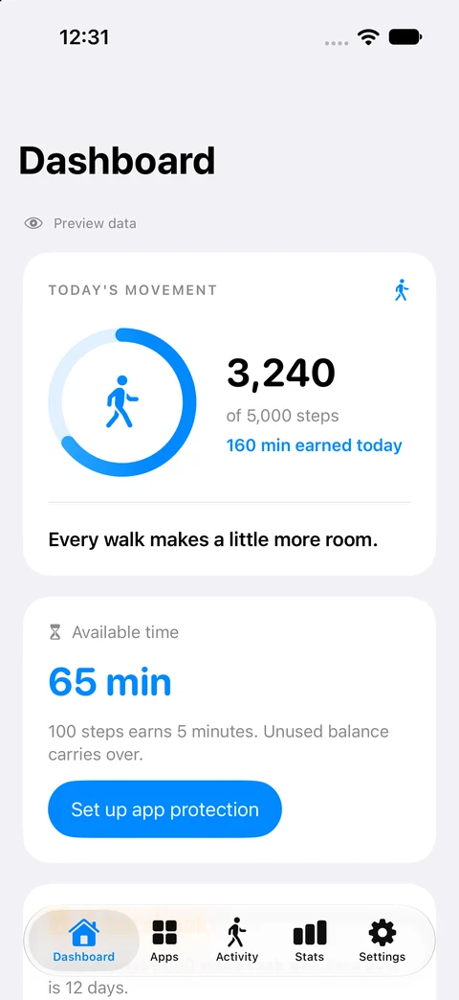
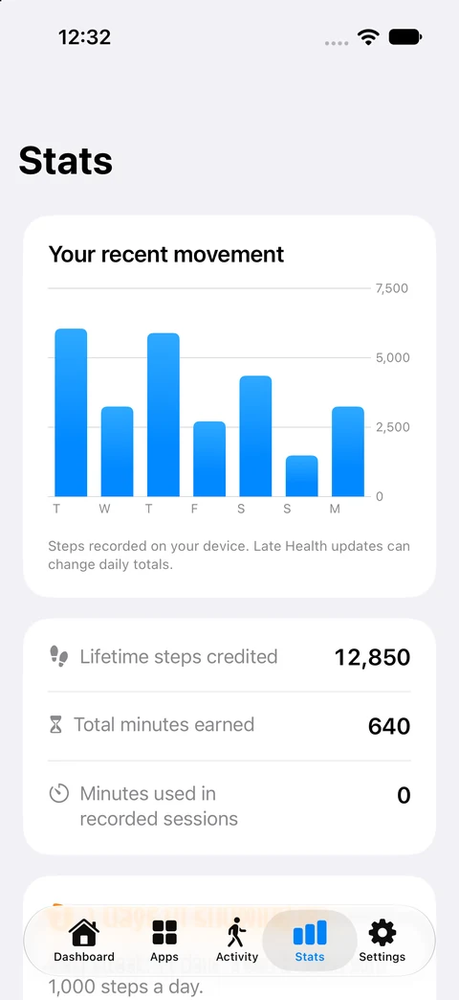

Choose your apps.
Pick the apps you reach for out of habit. Screen Time access lets FeedFare help you protect that space.
A little movement. A better balance.
Turn your steps into time for the apps you choose. Make room for a walk before your next scroll.
For iPhone and iPad. Current pricing and availability on the App Store.

Small steps, on your terms
Your next scroll can start with a little movement. FeedFare helps you make that connection.
Pick the apps you reach for out of habit. Screen Time access lets FeedFare help you protect that space.
Set a walking rule that fits your day. Your iPhone’s steps become earned screen time.
Use what you earn for a session, then return to your day. A little more intention, one walk at a time.
An example using the native preview’s default rule: every 100 steps earns 5 minutes. You can change your rule in the app.
An illustration, not a step tracker. Features and limits depend on your installed version.
Native preview · currently in TestFlight
Familiar iOS controls, a clear view of your progress, and a little encouragement to keep moving.
A simple daily history of your steps and earned minutes.
View full Activity screen
Your recent movement, earned time, and streaks in one place.
View full Stats screen
Actual simulator screens from the native preview, using example data. The preview requires iOS 17 or later and adapts to the system appearance. The released App Store app may look and behave differently while testing continues.
Health reads step counts. Motion supplies live steps. Screen Time enables app protection. Optional reminders are your choice.
The native preview stores your walking history and app selections on your device. It has no advertising or analytics SDK. Device backups follow your Apple settings.
Permission settings and delayed step updates can affect the experience. Our setup and troubleshooting guide walks you through them.
Make room for a little movement
Start with the FeedFare version available on the App Store today.
View on the App StoreThe current release is free to download with optional in-app purchases. The native paid-download release is being tested, with the full app included.
Until it launches, the App Store shows the current offer. Already subscribed? Manage your existing subscription.
A few helpful answers
From connecting your steps to managing previous purchases.
Visit supportChoose your walking rule in FeedFare. The native preview defaults to 100 steps earning 5 minutes. For example, 500 steps earns 25 minutes at that setting. Earned minutes are used for timed sessions; the rule and any limits depend on your installed version.
Apple Health access lets FeedFare read step counts. Motion & Fitness provides live step counting. Screen Time access lets you choose apps to protect. Reminders are optional. See the setup guide for what each permission does.
The screenshots show the new native version currently being tested in TestFlight, with example data. The App Store version may look different. Check the App Store for the current release, pricing, and compatibility.
The current App Store release is free to download with optional in-app purchases. We are preparing a paid-download release with the full app included. That change is not live yet. Existing subscriptions must still be managed separately with Apple; updating or deleting the app does not cancel them.
FeedFare can read steps that a compatible Apple Watch has synced to Apple Health on your iPhone. Those updates can arrive later. Open FeedFare and refresh if the total has not caught up. You do not need a watch to count steps with your iPhone.
In the native preview, a session gives access to one selected app for the time you choose. Other selected apps stay protected, and the selected app is protected again when the session ends. Protection depends on Screen Time authorization. Get help with app protection.
The current App Store listing supports iPhone and iPad with iOS or iPadOS 15.1 or later. The native preview requires iOS or iPadOS 17 or later; its appearance adapts to the system, including Liquid Glass on supported versions. The App Store lists the requirements for the version you can download.
FeedFare is an independent app by Nick Rae. The idea is simple: give a little movement a place in the moments you would otherwise spend scrolling. Choose your rule, find your pace, and build a routine that works for you.